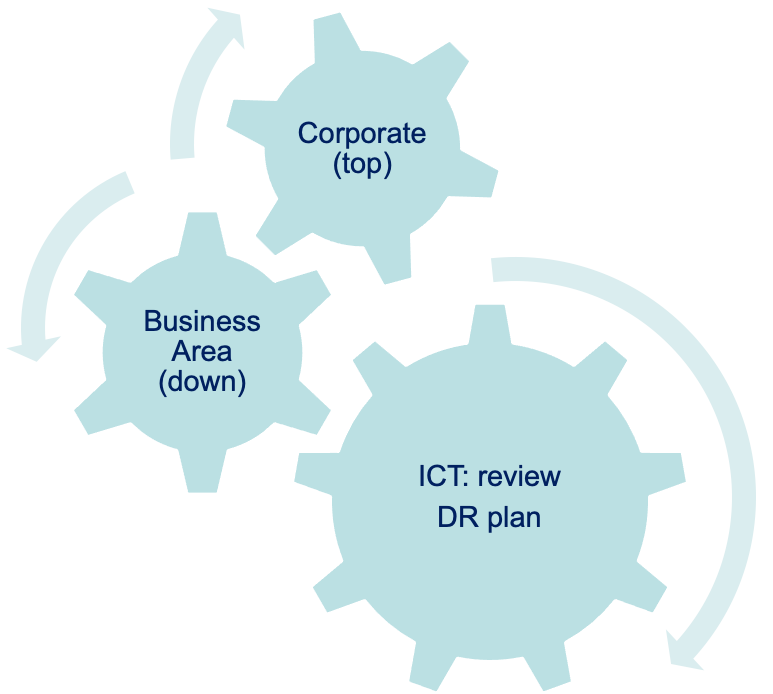

RTO/RPO
A View over the Trenches - A Council’s Experience
This is a presentation pack created by Jenny Pan of Hambleton District Council and was presented in the MHCLG Cyber Security Clinics on Friday 23rd July 2021
Our thanks go to Jenny for her work which was received well by all attendees.
Where is Hambleton ? Hambleton is a rural District Council in North Yorkshire

The main town and administrative centre is Northallerton, and the district also includes the market towns and major villages of Bedale, Thirsk, Great Ayton, Stokesley, and Easingwold.
Introduction
“Navigating the trenches - Business Continuity & Emergency Planning”

This image shows the flow used in the creation of the Business Continuity / Emergency Planning which was the driver for the setting of the Authorities RPO and RTO values.
Invoking ICT DR Plan
RTO within 24 hours
Initial situation report: 30 minutes (No disruption)
Senior Management situation report: every hour
Service Area: Invoke IMP for loss of ICT
Media and Communication: use all available channels to alert the public
Continuous Effort

Every stakeholder is engaged in the BC/DR planning, and improvements when identified are implemented.
Tackle RTO/RPO
Be able to rise above and see the bigger picture
Win trust across the organisation, and build everyones confidence
Know yourself !
Create a coaching culture to build a self-motivating team with solution design capacity
You are not alone !
Every Local Authority will be able to assist as RPO and RTO requirements will have impacted on the delivery of their BC/DR plans.
Ask !
There are resources to help you - from the Cabinet Office downover

Case Studies from Hambleton District Council
Case 1 : Member Support
2013: dedicated training and support post
2014: implement iPad, MDM and Modern.gov (Committee Minutes) (off network)
2014-15: Office 365 rollout (by Microsoft Europe, free)
2020: implement MFA for Office365
Case 2 : Resilience & Security by Design
2013-2015: Move public facing services to either cloud (Amazon, Microsoft) or external hosted (leading supplier)
2015: MT approval only use managed device (PSN)
2017: Cyber Insurance
2019: Provide laptops to Service Managers and above as part of Win10 rollout (resistance, budget constrain etc)
Case 3 : COVID-19 Impact
6th Feb 2020
Emergency Planning workshop – case study 21-29/Jan daily COVID-19 events in Sichun Province, P.R.China
How big data analysis and agile development played out under emergency
Implement Microsoft Teams in ICT
16-20th March 2020 (before lockdown 23/03/2020)
- Corporate Teams rollout and staff training
Tips for RTO/RPO
Be at least ‘half a step ahead’ of the game
Risk avoidance and transfer before mitigation
Remember, Less is more (quality not quantity) and balance your books
Be prepared, seize your moment!